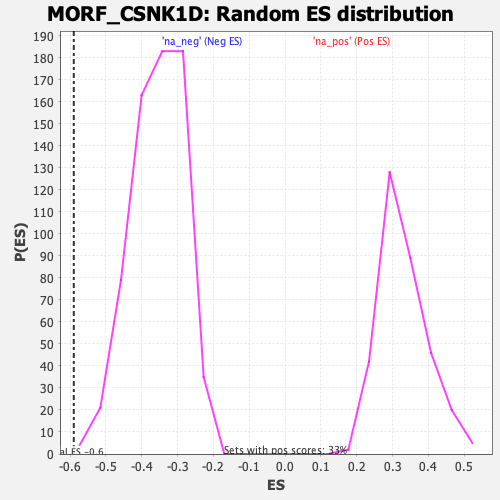

| | | Dataset | DE_genes |
| Phenotype | NoPhenotypeAvailable |
| Upregulated in class | na_neg |
| GeneSet | MORF_CSNK1D |
| Enrichment Score (ES) | -0.58983976 |
| Normalized Enrichment Score (NES) | -1.6635134 |
| Nominal p-value | 0.001497006 |
| FDR q-value | 0.064961754 |
| FWER p-Value | 0.248 |
Table: GSEA Results Summary
 Fig 1: Enrichment plot: MORF_CSNK1D
Fig 1: Enrichment plot: MORF_CSNK1D
Profile of the Running ES Score & Positions of GeneSet Members on the Rank Ordered List
| PROBE | GENE SYMBOL | GENE_TITLE | RANK IN GENE LIST | RANK METRIC SCORE | RUNNING ES | CORE ENRICHMENT | | 1 | PML | | | 513 | 1.695 | -0.0106 | No |
| 2 | KDM5C | | | 1135 | 0.733 | -0.0410 | No |
| 3 | TERF2IP | | | 1150 | 0.718 | -0.0323 | No |
| 4 | ZC3H3 | | | 1469 | 0.532 | -0.0458 | No |
| 5 | MR1 | | | 1747 | 0.408 | -0.0583 | No |
| 6 | STAT3 | | | 2042 | 0.314 | -0.0732 | No |
| 7 | DHRS1 | | | 2189 | 0.269 | -0.0791 | No |
| 8 | POLR2A | | | 2807 | 0.160 | -0.1170 | No |
| 9 | ARPC4 | | | 2916 | 0.148 | -0.1220 | No |
| 10 | GPR35 | | | 3769 | 0.084 | -0.1762 | No |
| 11 | MKRN1 | | | 3865 | 0.078 | -0.1813 | No |
| 12 | LSM12 | | | 5307 | 0.001 | -0.2749 | No |
| 13 | RAB1A | | | 5360 | -0.002 | -0.2782 | No |
| 14 | METAP1 | | | 6894 | -0.102 | -0.3764 | No |
| 15 | PRKAG1 | | | 7689 | -0.170 | -0.4257 | No |
| 16 | PLIN3 | | | 8598 | -0.262 | -0.4811 | No |
| 17 | CNP | | | 8719 | -0.276 | -0.4852 | No |
| 18 | ZBED1 | | | 9112 | -0.324 | -0.5063 | No |
| 19 | NUDT3 | | | 9193 | -0.334 | -0.5070 | No |
| 20 | PCBP3 | | | 9204 | -0.335 | -0.5032 | No |
| 21 | TIAL1 | | | 9306 | -0.348 | -0.5051 | No |
| 22 | PHB | | | 9619 | -0.391 | -0.5201 | No |
| 23 | PCGF1 | | | 9620 | -0.392 | -0.5148 | No |
| 24 | PRKCSH | | | 9833 | -0.422 | -0.5229 | No |
| 25 | SS18 | | | 9867 | -0.427 | -0.5193 | No |
| 26 | SFSWAP | | | 10893 | -0.580 | -0.5781 | No |
| 27 | NFYB | | | 11046 | -0.605 | -0.5798 | Yes |
| 28 | PCGF2 | | | 11063 | -0.609 | -0.5727 | Yes |
| 29 | OTUB1 | | | 11144 | -0.626 | -0.5695 | Yes |
| 30 | BECN1 | | | 11279 | -0.653 | -0.5695 | Yes |
| 31 | ST14 | | | 11449 | -0.688 | -0.5712 | Yes |
| 32 | MORC3 | | | 11737 | -0.749 | -0.5798 | Yes |
| 33 | TSTA3 | | | 11752 | -0.751 | -0.5706 | Yes |
| 34 | SRRT | | | 11798 | -0.762 | -0.5633 | Yes |
| 35 | RNF103 | | | 11813 | -0.764 | -0.5540 | Yes |
| 36 | AGPAT1 | | | 11849 | -0.772 | -0.5459 | Yes |
| 37 | RPRD2 | | | 11866 | -0.775 | -0.5365 | Yes |
| 38 | FAM89B | | | 12101 | -0.830 | -0.5406 | Yes |
| 39 | CHD8 | | | 12175 | -0.850 | -0.5339 | Yes |
| 40 | EML3 | | | 12202 | -0.855 | -0.5241 | Yes |
| 41 | MGAT1 | | | 12261 | -0.867 | -0.5163 | Yes |
| 42 | SDR39U1 | | | 12355 | -0.891 | -0.5104 | Yes |
| 43 | KHNYN | | | 12598 | -0.953 | -0.5133 | Yes |
| 44 | ALDH4A1 | | | 12613 | -0.956 | -0.5014 | Yes |
| 45 | SH2B1 | | | 12617 | -0.958 | -0.4887 | Yes |
| 46 | RASSF7 | | | 12720 | -0.987 | -0.4821 | Yes |
| 47 | BAHD1 | | | 12887 | -1.041 | -0.4789 | Yes |
| 48 | RABAC1 | | | 13151 | -1.121 | -0.4809 | Yes |
| 49 | PPP1R10 | | | 13164 | -1.124 | -0.4666 | Yes |
| 50 | IKBKG | | | 13436 | -1.225 | -0.4678 | Yes |
| 51 | PARN | | | 13460 | -1.237 | -0.4527 | Yes |
| 52 | TPR | | | 13581 | -1.286 | -0.4432 | Yes |
| 53 | BRD3 | | | 13680 | -1.321 | -0.4319 | Yes |
| 54 | ATG9A | | | 13929 | -1.436 | -0.4287 | Yes |
| 55 | MFN2 | | | 14006 | -1.473 | -0.4139 | Yes |
| 56 | RABGGTA | | | 14257 | -1.633 | -0.4082 | Yes |
| 57 | CSNK1D | | | 14298 | -1.659 | -0.3885 | Yes |
| 58 | CYHR1 | | | 14393 | -1.713 | -0.3716 | Yes |
| 59 | NELFB | | | 14533 | -1.813 | -0.3563 | Yes |
| 60 | STK19 | | | 14631 | -1.905 | -0.3371 | Yes |
| 61 | MTX1 | | | 14657 | -1.924 | -0.3129 | Yes |
| 62 | MRPL28 | | | 14665 | -1.930 | -0.2874 | Yes |
| 63 | DDB1 | | | 14676 | -1.943 | -0.2620 | Yes |
| 64 | TUBGCP2 | | | 14888 | -2.145 | -0.2469 | Yes |
| 65 | SLC25A36 | | | 15080 | -2.434 | -0.2267 | Yes |
| 66 | NAP1L4 | | | 15147 | -2.539 | -0.1969 | Yes |
| 67 | SLC9A1 | | | 15214 | -2.702 | -0.1649 | Yes |
| 68 | B4GALT3 | | | 15252 | -2.792 | -0.1299 | Yes |
| 69 | CIB1 | | | 15268 | -2.839 | -0.0927 | Yes |
| 70 | RAF1 | | | 15370 | -3.364 | -0.0542 | Yes |
| 71 | ADAM15 | | | 15451 | -4.521 | 0.0013 | Yes |
Table: GSEA details [plain text format]

Fig 2: MORF_CSNK1D: Random ES distribution
Gene set null distribution of ES for MORF_CSNK1D